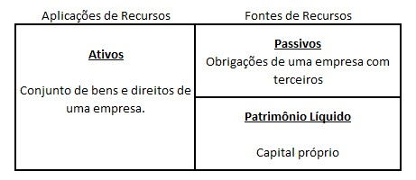

Dentre os principais relatórios de gestão de uma empresa está o Balanço Patrimonial ou o Balanço Contábil. Embora tenha toda essa importância, muitas vezes ele é negligenciado pelo empreendedor. Isso não ocorre por acaso, a falta de entendimento sobre como ele é formado e o que representa, afasta o empresário na hora de sua utilização. Uma parte da culpa é nossa, dos contadores… precisamos aproximar o empresário deste documento. Vale lembrar que ele é item obrigatório para as empresas segundo a legislação. Então, quer entender um pouco mais sobre esse importante relatório? Acompanhe o nosso post sobre o tema!
O Balanço Patrimonial é um relatório contábil gerado após o registro de todas as movimentações financeiras de uma empresa em determinado período. Esses registros dos fatos contábeis são aqueles que constam no livro diário da empresa. Essa demonstração informa toda a situação patrimonial, ou seja, os bens, direitos e obrigações de uma empresa. Além disso, é possível identificar todos os investimentos e suas fontes de recursos. Por esses motivos e outros que ele, junto com uma Demonstração de Resultado do Exercício é uma excelente fonte de informação para o planejamento e ação nas empresas.
O Balanço Patrimonial é a forma de representar todos os registros contábeis para que o empreendedor possa utilizar as suas informações. Ele organiza e classifica as informações em blocos para o empresário. Com isso se espera aproximar as informações contábeis para os gestores da empresa.
Com o Balanço é possível:
* Ter uma posição patrimonial da empresa e conhecer todos os bens, direitos e obrigações em determinado período;
* Entender as fontes de recursos para os investimentos da empresa;
* Observar a sua evolução história para o planejamento e ação futura;
* Permitir e dar lastro ao pagamento de dividendos aos sócios da empresa;
* Permitir o Planejamento Tributária da Empresa;
* Fornecer informações úteis para as partes interessadas (stakeholders)
Identificou alguma necessidade sua nos itens acima? Vamos continuar nossa jornada para você entender melhor como o Balanço Patrimonial poderá te ajudar.
Muita gente já ouviu falar sobre os tais Ativos e Passivos de um Balanço Patrimonial. Mas o que de fato é importante saber é: o que eles representam. No relatório em seu lado esquerdo ficam os Ativos da empresa e do lado direito os Passivos e o Patrimônio Líquido. A sua situação é sempre de equilíbrio, onde os Ativos são iguais ao montante de Passivos.
Os valores são agrupados em contas para facilitar a análise e a sua ordem é determinada pela situação de liquidez. As mais líquidas, ou seja, as que se transformam mais rapidamente em dinheiro vem primeiro, na parte de cima do Balanço. Conforme elas fiquem menos liquidas, ou seja, mais difícil a sua transformação rápida em dinheiro, vão ficando mais abaixo. O Balanço permite duas visões claras, sendo uma patrimonial e outra de fontes e aplicação de recursos.
Nesta visão do Balanço é possível identificar os Bens, Direitos e Obrigações da Empresa. Bens no Balanço, são tudo o que se possa satisfazer alguma necessidade da empresa, que tenha um valor e que possamos dizer que a empresa tenha sua posse. Um exemplo disso, são maquinas e equipamentos utilizados pela empresa na produção de produtos e serviços. Agora, quando a empresa possui um Bem, porém ele não está sobre o seu poder ele é um Direito. Vamos pensar sobre os recursos depositados em um Banco. O dinheiro é um Bem da empresa, mas ele não está sobre o seu poder. O fato do Banco estar com um Bem da empresa o transforma em Direito. Isso ocorre por exemplo com o Contas a Receber. Você vendeu uma mercadoria com a condição de receber um dinheiro. O dinheiro é seu, porém o comprador da mercadoria ainda não entregou ele a você. Já as Obrigações vêm dos Bens que não são seus e estão sobre o seu poder. Quando um funcionário trabalha para você com a condição de pagamento mensal, aquele valor é do empregado, mas somente vai para ele no final do mês. Na visão patrimonial, todos os bens e direitos da empresa, estão em equilíbrio com suas obrigações, sejam com terceiros, como governo, fornecedores e bancos (passivos), como com os sócios (patrimônio líquido).
Se essa visão patrimonial não lhe interessa, tenho certeza que essa é mais interessante. Para você, rentabilizar uma empresa é necessário investir recursos, sejam máquinas ou equipamentos, sejam em estoques, correto? Pois bem, essa visão mais dinâmica você encontrará em um balanço patrimonial. Os ativos nada mais são que investimentos que você realiza na empresa a fim de obter lucro. Já os Passivos e o Patrimônio Líquido são as fontes de recursos para tais investimentos. Deste equilíbrio, entre as fontes e aplicações de recursos é que são maximizadas as rentabilidades. Quer saber mais sobre isso? Continue lendo que explicaremos com mais detalhes essa análise no Balanço.
Embora separados por contas, os agrupamentos em blocos de contas ajudam na análise e leitura do relatório.
Os Ativos são separados em:
* Ativos Circulantes: Estes são os direitos que a empresa possui e que consegue realizar, ou seja, transformar em dinheiro em um período inferior a um ano. As principais contas do circulante são, Caixa, Bancos, Contas a Receber e Estoques.
* Ativos não Circulantes: Já os ativos não circulantes compões de bens e direitos com realização acima de um ano. Nele estão os direitos de mais longo prazo, no Realizável de Longo Prazo e os bens da empresa, como o Imobilizado e os Investimentos.
O Passivo também é separado em lógica semelhante, em:
* Passivo Circulante: obrigações com vencimento de um prazo de até um ano, tais como: Fornecedores, Empréstimos e Impostos;
* Passivo não Circulante: composto de obrigações com vencimento superior a um ano, como Empréstimos de Longo Prazo;
* Patrimônio Líquido: Aonde estão os recursos diretamente investidos pelos sócios e as Reservas de Capital realizadas.
O que antecede a elaboração do Balanço Patrimonial são os registros dos fatos contábeis. Esses fatos, são todas as alterações e movimentações envolvendo os bens, direitos e obrigações da empresa.
De posse dos documentos que comprovem os fatos que ocorreram, o contador realiza a escrituração destes no livro diário. O livro diário mantém todo o registro destes fatos ocorridos através de lançamentos contábeis em partidas dobradas.
As partidas dobradas é o que garante o equilíbrio entre os Ativos e Passivos, já que para que ocorra o registro é necessário realizar um débito e um crédito.
Recomendamos para você:
Imposto de Renda: Distribuição de Lucro, Pró-labore e Receita de Alugueis
Débito e Crédito, são uma daquelas palavras que tem um significado muito particular para a profissão, do tipo Superávit e Déficit para os economistas.
Nos registros contábeis, por exemplo, os débitos possuem significado de Destino, e os Créditos o significado de Origem. É por isso que um débito na conta bancos para um contador significa entrada de dinheiro, e se você pensar em um débito na sua conta, provavelmente ficará preocupado com uma saída.
Todos esses registros realizados vão seguir os preceitos contábeis e tem uma diferença básica muito importante para um fluxo de caixa: o regime de competência.
Por seguir este regime, o Balanço consegue apurar o que realmente aconteceu na empresa em determinado período, ampliando o poder de análise.
Feito todos esses registros, eles de forma agregada formaram o Balanço Patrimonial e Contábil da Empresa.
É por todas as questões técnicas acima descritas que esses documentos possuem competência exclusiva de um contador habilitado. Desconfie se um outro profissional te entregar um documento como este.
Essa é uma parte importante deste texto, pois, resgatando lá na introdução, esse é um tema bastante negligenciado por alguns empreendedores. E por isso é importante falar da obrigatoriedade dos registros contábeis. O registro contábil é obrigatório segundo as normas do CFC (Conselho Federal de Contabilidade) e aplicado sobre qualquer tipo de empresa. O Código Civil em seu artigo 1.179 também obriga as empresas a terem seus fatos registrados. Isso inclui empresas optantes do Simples Nacional, como poderemos observar na Resolução 10/2007 do Comitê Gestor onde determinar em seu art. 3º – As ME e as EPP optantes pelo Simples Nacional deverão adotar para os registros e controles das operações e prestações por elas realizadas. Os únicos dispensados da escrituração contábil segundo a Legislação é o MEI, mas ainda assim é recomendável. Por isso empresário, não deixe de enviar os documentos e registros de fatos ao seu contador, ele te agradecerá e poderá elaborar esses importantes registros. Para saber mais sobre os documentos necessários acesse: Documentos que eu tenho que enviar mensalmente para o contador.
Já comentei sobre a obrigatoriedade da escrituração, mas você sabe o que pode acontecer se você não tiver um Balanço Contábil?
Vamos a alguns itens:
1- Impossibilidade de utilizar a informação para defesa de processos tributários.
O Balanço constitui importante prova em processos de discussão de causas tributárias. Sem ele sua defesa ficará frágil já que você está não compliance com a legislação.
2- Impossibilidade de distribuir Lucro Isentos acima da Presunção.
A legislação do Imposto de Renda determina que sem Demonstrações Contábeis que evidenciem o lucro, os rendimentos isentos se limitem a presunção que é de 8% do faturamento para empresas comerciais/industriais e de 32% para empresas de serviços.
3- Impossibilidade de analisar o desempenho da empresa considerando a competência, visão que muitas vezes o Fluxo de Caixa não permitirá.
4- Não possibilitará o requerimento de recuperação judicial da empresa, já que ele é imprescindível conforme a Lei 11.101/2005.
Terá problemas para levantar haveres dos sócios em uma possível saída da empresa.
Esses são alguns problemas, mas vamos falar de coisa boa! Veja as vantagens do Balanço no artigo 8 motivos para contratar um contador para sua empresa.
Sei que muitos de você leram o texto até aqui para entender as análises possíveis com um Balanço Patrimonial, não é mesmo? Espero não decepcionar a todos que esperaram por este momento. Por isso não vou falar sobre entender o Patrimônio e falar mais sobre o desempenho empresarial.
Uma das coisas mais importantes do Balanço é analisar as fontes e aplicações de recursos. Para que você tenha rentabilidade é importante que suas fontes de recursos tenham um custo menor do que a rentabilidade trazida pela aplicação do investimento. Em exemplo prático, o que vale mais a pena, conseguir mais prazo com o fornecedor para comprar mercadorias ou pegar uma linha de crédito onerosa no banco? Estamos vendo acima, em exemplo prático de como o Balanço pode ajudar na análise da nossa empresa. Com certeza é melhor ter mais prazo com o fornecedor se ele não custar mais por isso. Com isso podemos fazer o estoque, revender, receber e ter o lucro. Esse lucro seria menor do que se tivéssemos que pagar um empréstimo no Banco. Outra questão da análise de recursos é o prazo de maturação dos investimentos. Em exemplo para entender o que eu digo é, se você vai comprar uma máquina que terá sua utilização por um bom tempo, não adianta se financiar no curto prazo. O melhor é conseguir uma linha de crédito mais longa e poder pagar os empréstimos com o resultado do investimento. Tudo isso é possível analisar olhando para o Balanço Contábil. Outro ponto gerencial importante é a análise do Capital de Giro, para esse vou indicar um artigo mais completo em nosso site: Capital de Giro: O que é e como calcular?
Uma forma de analisar o Balanço é contar com indicadores que facilitem a visualização da situação econômica e financeiro da empresa. Vou dar uma pincelada rápida sobre esses indicadores:
* Retorno sobre os Ativos = Lucro Líquido /Ativo Total
* Giro de Ativos = Vendas /Ativo Total
* Retorno sobre o Patrimônio Líquido = Lucro Líquido /Patrimônio Líquido.
* Liquidez Corrente = Ativo Circulante / Passivo Circulante
* Liquidez Seca = (Ativos Circulantes – Estoques) / Passivos Circulantes
* Liquidez Geral = (Ativos Circulantes + Realizável a Longo Prazo) / (Passivo Circulantes + Exigível a Longo Prazo)
* Liquidez Imediata = Disponível /Passivos Circulantes
* Endividamento = Passivo Total /Ativo Total
* Grau de Endividamento = Passivo / Patrimônio Líquido
Para saber sobre a análise da empresa por meio de indicadores indico dois textos:
4 dicas para avaliar a situação econômica e financeira da sua empresaConsidero esse texto muito importante. A intenção dele é tentar desmistificar a questão do Balanço Patrimonial e o quão longe ele está do empreendedor. Ele é peça obrigatória, mas a mensagem é que mais do que isso, ele pode ser instrumento de gestão. Longe de ver ele exclusivamente como um registro patrimonial, ele traz importantes informações sobre as fontes e utilizações de recursos na empresa. Essa é peça chave para qualquer análise e possível ação para aumento da rentabilidade. É preciso conhecer os seus elementos, conversar com o seu contador e solicitar ajuda para entender. Tenho certeza que se você fizer isso terá mais alegrias do que tristezas!!! É por essas e outras que é Preciso um Contador em Sua Empresa.
Emanuel Ibiapino
Camila Catiely
Orrana Lhaynher
Walef Alves